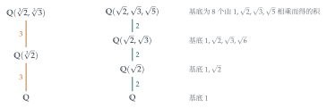

STEP II 2023，第 4 题
继续之前，请先阅读题目（原题为英文）。题目载于 OCR 提供下载的 2023 年 STEP 试卷（zip 文件）内的 STEP II 试卷： www.ocr.org.uk/Images/707102-2023-past-papers.zip
引子
\(\sqrt2\) 是 \(x^2 - 2\) 的根，而这是一个整数系数多项式（polynomial）。同样，\(\sqrt3\) 是 \(x^2 - 3\) 的根。那么 \(\sqrt2 + \sqrt3\) 是否也是某个整数系数多项式的根？\(\sqrt2 + \sqrt3 + \sqrt5\) 又如何？\(\sqrt[3]2 + \sqrt[3]3\) 呢？
凡是整数系数多项式的根，都称为代数数（algebraic number）。这道题通过亲手消元（elimination），说明代数数之和仍是代数数。计算所得的次数 \(4\)、\(8\)、\(6\)、\(9\) 并非偶然：它们量度每个数有多“复杂”，而这种量度，即域扩张的次数（degree of a field extension），正是最终解决古希腊倍立方与三等分角问题的关键。
动笔之前
要找一个以 \(\sqrt2\) 为根的多项式，你会把 \(x = \sqrt2\) 平方，从而消去平方根。若有两个不同的平方根，怎样才能逐一消去？
先把其中一个平方根单独移到一边再平方，它便会消失；然后把另一个平方根单独移到一边，再平方一次。每次平方都可能令次数加倍。整道题的策略就是如此：逐一消去根式（radical）。
逐步解题
阶段 1 两个平方根
若 \((x - \sqrt2)^2 = 3\)，则 \(x^2 - 2\sqrt2\,x + 2 = 3\)，所以 \(x^2 - 1 = 2\sqrt2\,x\)。平方便可消去余下的平方根：\((x^2 - 1)^2 = 8x^2\)，即 \[x^4 - 10x^2 + 1 = 0. \qed\] 而 \(x = \sqrt2 + \sqrt3\) 满足 \((x - \sqrt2)^2 = (\sqrt3)^2 = 3\)，所以 \(\mathrm{f}(\sqrt2 + \sqrt3) = 0\)。■
阶段 2 三个平方根
设 \(x = \sqrt2 + \sqrt3 + \sqrt5\)，则 \(x - \sqrt5 = \sqrt2 + \sqrt3\) 是 \(\mathrm{f}\) 的根。把 \(\mathrm{f}(x - \sqrt5) = 0\) 写成 \(P(x) + \sqrt5\,Q(x) = 0\) 的形式。之后怎样消去 \(\sqrt5\)？
利用 \((x - \sqrt5)^2 = x^2 + 5 - 2\sqrt5 x\) 和 \((x - \sqrt5)^4 = \bigl(x^2 + 5 - 2\sqrt5x\bigr)^2 = x^4 + 30x^2 + 25 - 4\sqrt5\,x(x^2 + 5)\) 展开： \[\mathrm{f}(x - \sqrt5) = \bigl(x^4 + 30x^2 + 25\bigr) - 4\sqrt5\,x(x^2 + 5) - 10\bigl(x^2 + 5\bigr) + 20\sqrt5\,x + 1.\] 合并同类项，得 \(P(x) = x^4 + 20x^2 - 24\) 和 \(Q(x) = -4x^3 - 20x + 20x = -4x^3\)。所以 \(x^4 + 20x^2 - 24 = 4\sqrt5\,x^3\)。平方得 \[\bigl(x^4 + 20x^2 - 24\bigr)^2 = 80x^6,\] 展开后得 \[\mathrm{g}(x) = x^8 - 40x^6 + 352x^4 - 960x^2 + 576. \qed\] （验算：\((x^4 + 20x^2 - 24)^2 = x^8 + 40x^6 + 352x^4 - 960x^2 + 576\)，其中用到 \(400 - 48 = 352\)；再减去 \(80x^6\) 便得 \(\mathrm{g}\)。）
阶段 3 一个三次方程与一个平方根
若 \(x = a + \sqrt2\)，则 \(x - \sqrt2\) 是 \(t^3 - 3t + 1\) 的根。代入后，把含有 \(\sqrt2\) 的项与不含它的项分开，然后平方。
\((x - \sqrt2)^3 = x^3 - 3\sqrt2\,x^2 + 6x - 2\sqrt2\)，所以 \[(x - \sqrt2)^3 - 3(x - \sqrt2) + 1 = \bigl(x^3 + 3x + 1\bigr) - \sqrt2\bigl(3x^2 - 1\bigr) = 0.\] 因此 \((x^3 + 3x + 1)^2 = 2(3x^2 - 1)^2\)。展开得 \(x^6 + 6x^4 + 2x^3 + 9x^2 + 6x + 1 = 18x^4 - 12x^2 + 2\)，所以 \[\mathrm{h}(x) = x^6 - 12x^4 + 2x^3 + 21x^2 + 6x - 1. \qed\] 同样的论证对 \(b + \sqrt2\) 和 \(c + \sqrt2\) 也成立，因为我们只用到 \(a\) 是 \(t^3 - 3t + 1\) 的根这一事实。（\(\mathrm{h}\) 的另外三个根是 \(a - \sqrt2\)、\(b - \sqrt2\) 和 \(c - \sqrt2\)，它们是在平方时引入的。）
阶段 4 两个立方根
设 \(x = \sqrt[3]2 + \sqrt[3]3\)。把两边立方。你能否把结果用 \(x\) 和单独一个立方根表示？
利用 \((u + v)^3 = u^3 + v^3 + 3uv(u + v)\)，取 \(u = \sqrt[3]2\)，\(v = \sqrt[3]3\)： \[x^3 = 2 + 3 + 3\sqrt[3]6\,x, \qquad\text{所以}\qquad x^3 - 5 = 3\sqrt[3]6\,x.\] 再立方一次，便消去最后一个立方根：\((x^3 - 5)^3 = 27 \cdot 6\,x^3 = 162x^3\)。展开 \((x^3 - 5)^3 = x^9 - 15x^6 + 75x^3 - 125\)，得 \[\mathrm{k}(x) = x^9 - 15x^6 - 87x^3 - 125. \qed\]
回顾
逐一消去根式。把一个根式单独移到一边，取适当的次方，然后重复这个步骤。
把有理部分与无理部分分开。把式子写成 \(P + \sqrt5\,Q\)，再利用 \(P^2 = 5Q^2\)，是关键的一步。
平方会带来额外的根。每次平方都会引入“共轭”（conjugate）根，例如除了 \(a + \sqrt2\) 之外还有 \(a - \sqrt2\)。最后得到的多项式以它们全部为根。
背后的数学
所有形如 \(p + q\sqrt2\)（其中 \(p\)、\(q\) 为有理数）的数所组成的集合 \(\mathbb{Q}(\sqrt2)\)，对加、减、乘、除（除数不为零）都封闭：它是一个域（field）。它是 \(\mathbb{Q}\) 上的二维“向量空间”（vector space），以 \(1, \sqrt2\) 为基底（basis），所以我们说它在 \(\mathbb{Q}\) 上的次数（degree）是 \(2\)。添加 \(\sqrt3\) 便得到 \(\mathbb{Q}(\sqrt2, \sqrt3)\)，其基底为 \(1, \sqrt2, \sqrt3, \sqrt6\)，次数为 \(4\)；再添加 \(\sqrt5\)，次数便是 \(8\)（图 6.3.1）。塔定律（tower law）指出，沿着一座域塔往上，次数会相乘。由一个数生成的域，其次数等于该数的最小多项式（minimal polynomial）的次数，即该数所满足的有理系数多项式之中次数最低的一个。可以证明，本题的多项式 \(\mathrm{f}\) 和 \(\mathrm{g}\) 都是最小多项式，所以 \(\sqrt2 + \sqrt3\) 的次数是 \(4\)，而 \(\sqrt2 + \sqrt3 + \sqrt5\) 的次数是 \(8\)：事实上，单凭 \(\sqrt2 + \sqrt3 + \sqrt5\) 这一个数，就足以生成整个 \(8\) 次域。

倍立方
尺规作图（ruler-and-compass construction）所能作出的长度，只限于由有理数出发、反复解一次和二次方程而得到的数。每一步都给出一个次数为 \(1\) 或 \(2\) 的域扩张，所以根据塔定律，每个可作图（constructible）的长度都位于一个次数为 \(2\) 的幂的域之内，而它本身的次数也是 \(2\) 的幂。但 \(\sqrt[3]2\) 的最小多项式是 \(x^3 - 2\)，次数为 \(3\)。由于 \(3\) 不是 \(2\) 的幂，\(\sqrt[3]2\) 不可作图，因此约于公元前 430 年提出的提洛岛（Delos）问题，即用尺规把立方体的体积加倍，是不可能做到的。旺策尔（Pierre Wantzel）在 1837 年证明了这一点，同时证明了一般的角不可能三等分，并完成了可作图正多边形的分类（第 6.2 节）。两千年来的种种尝试，就此被一个关于次数的论证画上句号。
代数数构成一个域
本题的方法通过例子说明，代数数之和仍是代数数。一般情况则要用线性代数（linear algebra）来证明：若 \(\alpha\) 和 \(\beta\) 的次数分别为 \(m\) 和 \(n\)，则所有 \(\alpha^i\beta^j\)（其中 \(i < m\)，\(j < n\)）这些数所张成的空间，维数至多为 \(mn\)，于是 \(mn + 1\) 个幂 \(1, \alpha + \beta, (\alpha + \beta)^2, \ldots\) 必定线性相关（linearly dependent），由此得出一个次数至多为 \(mn\) 的多项式。我们得到的次数 \(4 = 2 \times 2\)、\(6 = 3 \times 2\) 和 \(9 = 3 \times 3\) 与这个规律完全吻合。不是代数数的数称为超越数（transcendental number）；\(e\) 和 \(\pi\) 都是例子（分别由埃尔米特（Hermite）于 1873 年及林德曼（Lindemann）于 1882 年证明），而林德曼关于 \(\pi\) 是超越数的定理，也证明了化圆为方同样不可能。
思维技巧
要找出一个含根式的式子所满足的多项式，可把根式逐个单独移到一边，再取适当的次方，逐一消去。
然后问一问：次数说明了甚么？最小多项式的次数是该数的一个不变量（invariant），而比较次数是证明某事不可能的最有力方法之一。
延伸练习
本原元（primitive element）。设 \(y = \sqrt2 + \sqrt3\)。证明 \(y^3 = 11\sqrt2 + 9\sqrt3\)，并由此推出 \(\sqrt2 = \frac12(y^3 - 9y)\)。因此每个形如 \(p + q\sqrt2 + r\sqrt3 + s\sqrt6\) 的数都可以写成 \(y\) 的多项式。
混合根式。求一个次数为 \(6\) 的整数系数多项式，使它以 \(\sqrt2 + \sqrt[3]3\) 为根。
不可约性（irreducibility）。证明 \(x^4 - 10x^2 + 1\) 没有有理根，而且不能写成两个整数系数二次式的积。（提示：试用 \((x^2 + ax + b)(x^2 - ax + c)\)。）由此推出 \(\sqrt2 + \sqrt3\) 的次数是 \(4\)。
三等分角。证明 \(\cos 3\theta = 4\cos^3\theta - 3\cos\theta\)，并由此推出 \(\cos 20^\circ\) 是 \(8x^3 - 6x - 1 = 0\) 的根。假设这个三次方程没有有理根（请自行验证），解释为何不能用尺规把 \(60^\circ\) 的角三等分。
延伸阅读
Ian Stewart, Galois Theory（CRC Press）。讲述域扩张、塔定律及古典作图问题，为大学本科生而写。
Richard Courant & Herbert Robbins, What Is Mathematics?（Oxford University Press）。第 3 章证明古希腊几大问题不可能解决，毋须任何预备知识。
Robin Hartshorne, Geometry: Euclid and Beyond（Springer）。以近世代数处理尺规作图。